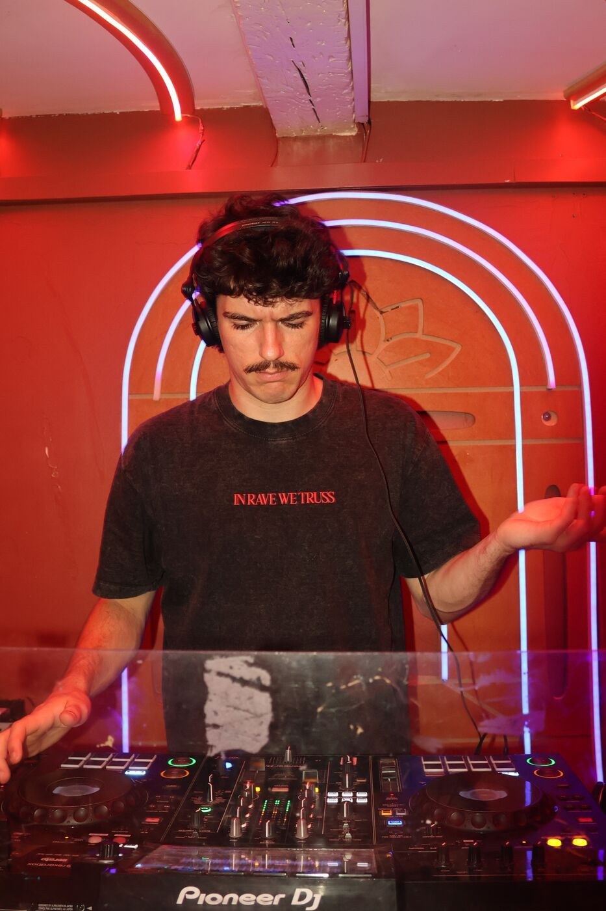
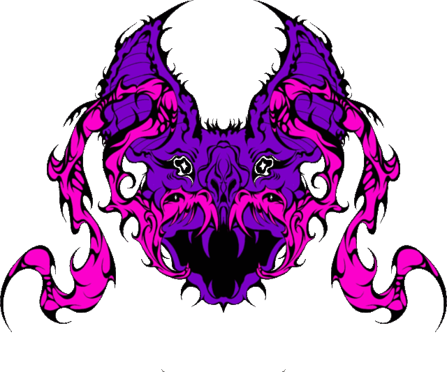
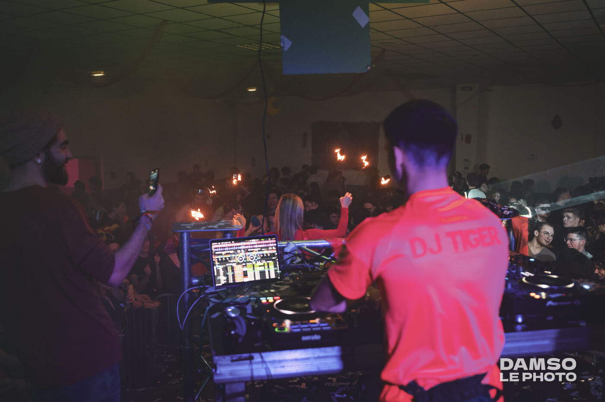
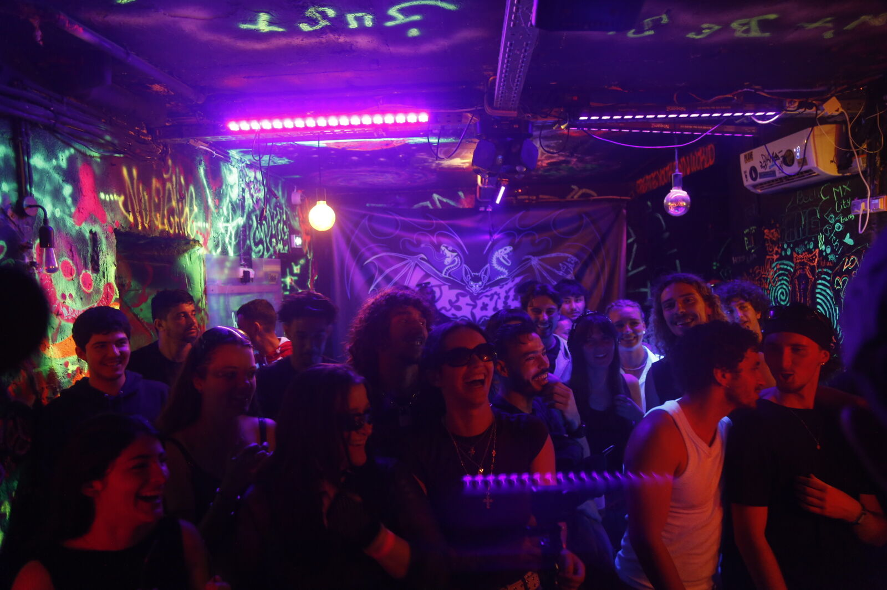
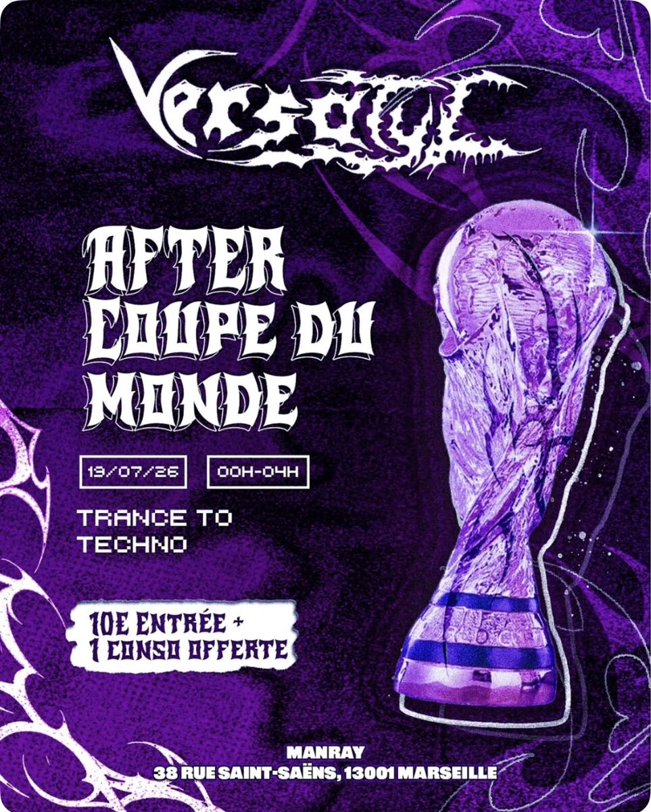
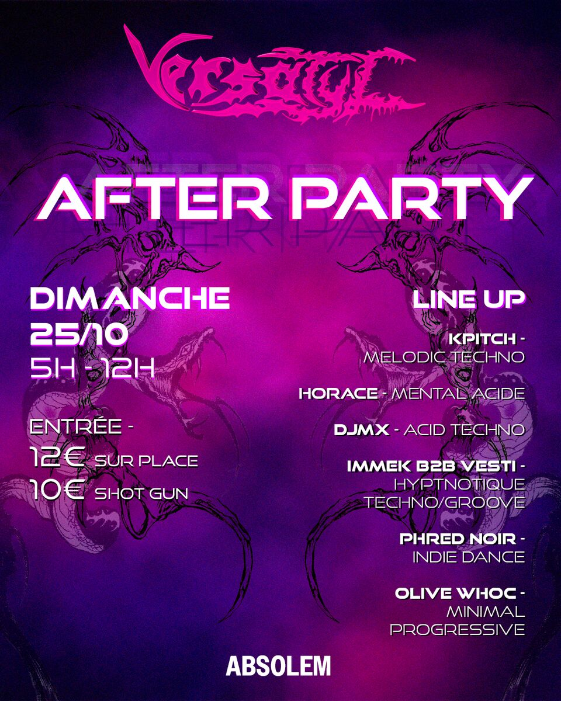
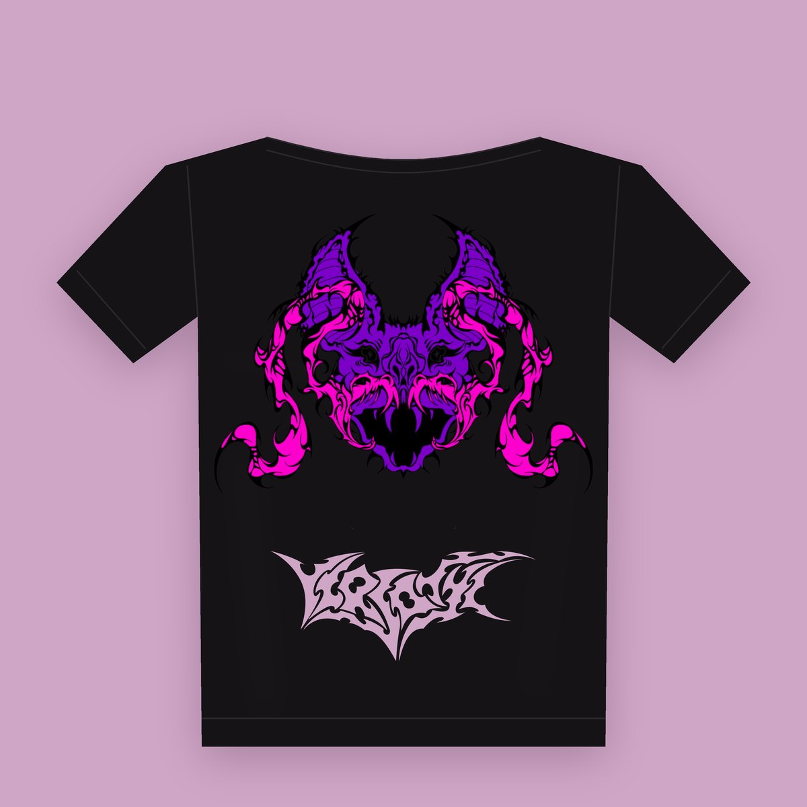
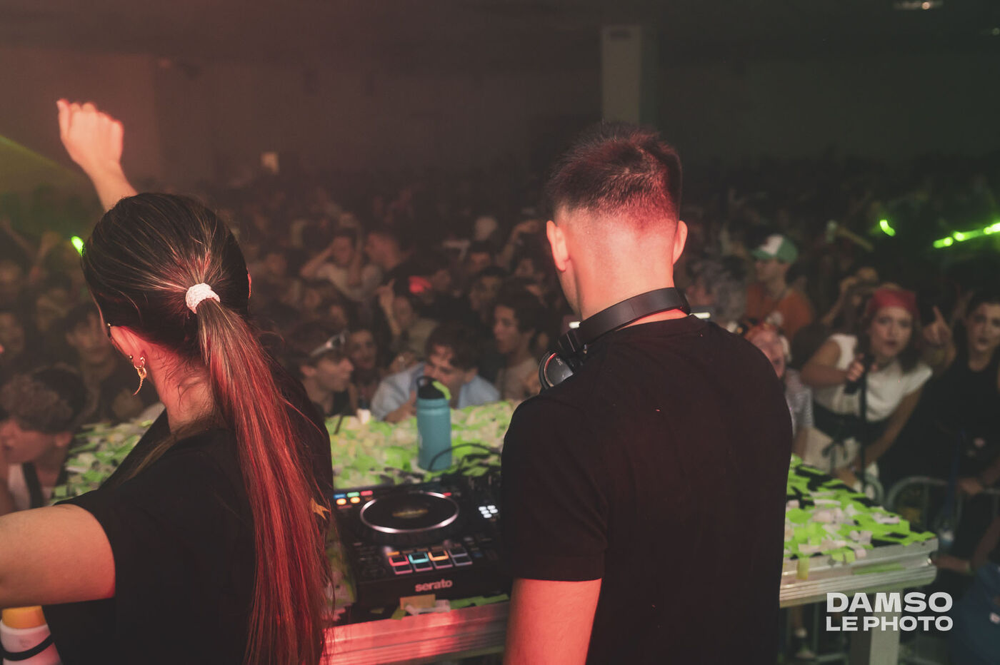

DJMX
Hard techno · Schranz · Acid
Fondateur du collectif, Jimmy a fait ses armes dans les soirées étudiantes de médecine. À l'affiche d'au moins onze soirées Versatyl, il tient la ligne directrice des line-ups.
02 · DJs résidents
Quatre DJs qui tiennent la courbe des soirées, du premier kick house au dernier bpm hardcore.

Hard techno · Schranz · Acid
Fondateur du collectif, Jimmy a fait ses armes dans les soirées étudiantes de médecine. À l'affiche d'au moins onze soirées Versatyl, il tient la ligne directrice des line-ups.

Hardcore · Indus
Il joue en fin de montée, en hardcore et en indus. Il a joué en b2b avec DJMX lors de Versatyl X Absolem, la plus grosse soirée du collectif.
Bounce
Du bounce, joué en fin de nuit. P!NKY a joué au premier after Versatyl à l'Absolem, le dimanche matin entre 9h30 et 11h.

House · Tech house
Le côté house des line-ups. DJ Tiger tient la salle house des trois soirées multi-rooms à la Danceteria et a clôturé le premier after à l'Absolem.
03 · Formats
Chaque lieu a donné naissance à un format, avec sa propre progression musicale.

Format 01 · depuis mars 2026
Le format fondateur. Une montée sur 4 à 5 h, de la trance au hard techno puis à l'indus.
Format 02 · depuis mai 2026
Sessions de 19h à 1h : trance bouncy, disco et hard bounce, avant de durcir vers la hard techno.
Format 03 · juin 2026
Jusqu'à 8 h de son avec sept DJs, de la trance et du hardgroove au schranz puis à la hard music.

Format 04 · depuis juin 2026
Le dimanche de 23h à 4h. Basses profondes, rythmes rapides, textures industrielles.
Format 05 · depuis juillet 2026
Minuit à 6h. Salle 1 en house, salle 2 de la trance à la hardtechno et à l'indus.
Format 06 · depuis août 2026
Sets courts de 30 à 45 min : la soirée change de visage à chaque DJ, du groovy solaire au hardcore.

Format 07 · depuis août 2026
Courbe inversée : on démarre sur la hardtechno et l'acid pour glisser vers le mélodique et le solaire.
Format 08 · septembre 2026
Le plus gros format du collectif, de la trance à l'indus, avec des artistes qui jouent pour la première fois à Marseille.
04 · Le collectif
Versatyl est né à l'initiative de DJMX, alias Jimmy. C'est aujourd'hui une famille de plus de dix personnes qui crée les soirées et développe les projets du collectif.
Nos line-ups vont de la house à la hard techno, parfois jusqu'au hardcore dans la même nuit. Nos afters prennent le chemin inverse, de l'acid techno à l'indie dance ou à la minimal. On construit chaque soirée autour d'une énergie et d'une progression, plutôt que d'un style.
Au-delà des soirées, on réalise des courts-métrages sur la culture techno, pensés pour les cinémas indépendants du Cours Julien et de Castellane, et on confie nos visuels à des vidéastes, photographes et graphistes locaux.
De mars à novembre 2026.

05 · Boutique
Édition limitée, produite uniquement à partir des précommandes. Nos collections sont pensées dans une démarche de production éthique : on fabrique ce qui est commandé, rien de plus.
25 €
Précommander06 · Galerie

Photos réalisées par des photographes marseillais. Aucune image générée par IA.
07 · Engagements